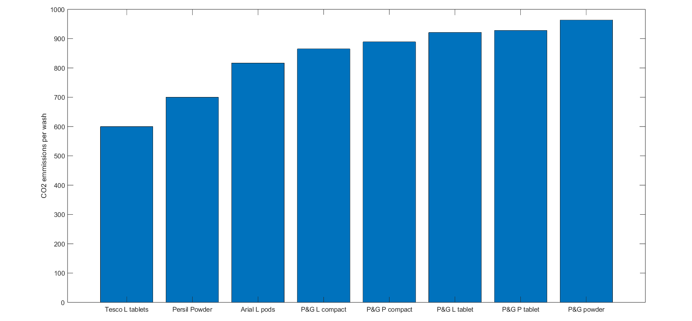
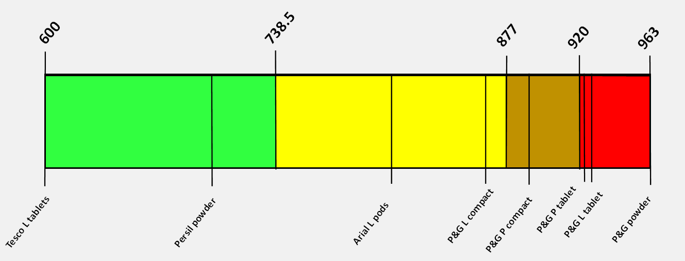

How we utilise the data
Although some of the markets are highly competitive, it is unlikely that any groups would have more than 30 or so different products and therefore it may be difficult to approximate the groups using common distributions. Therefore we have decided to use the following method to give accurate and easy to read comparisons: First we find the amount of the selected pollutant produced in the stages of the lifecycle before the purchase of the product. This value is then normalised to a per unit amount, an example of this may be per washing tablet or per serving of toothpaste. Next we rank each product from lowest to highest. The selection of the colour associated with their ranking is as follows; [Diagram of thing] This method was used over just using quartiles as it allows for emphasis on extremes, as if there was one option that was significantly better or worse than the rest, there would be less in the green or red category leading them to stand out more.
Example: Laundery Detergents
Below we cover an example of the group consisting of dishwasher tablets, liquids and powders. In this example we look at the CO2 emmissions of 9 of the options someone may encounter in the supermarket
 As we can see above, The best ooption in this case would be the Tesco liquid pods
How data would be gathered
For the pollutants: As the seller of the product, the final company in the chain would be responsible for making sure that data regarding the pollutants produced by other companies that may have contributed to the final product. The value used on the product must be the average for the specific product over the previous year. The analysis for the ‘Overall Company Impact’ would include any environmental projects the company is associated with, including the purchasing of Voluntary Carbon Credits. These other projects would be analyzed by a third party verify to ensure that the projects are acted upon as state and effective at what they set out to do.